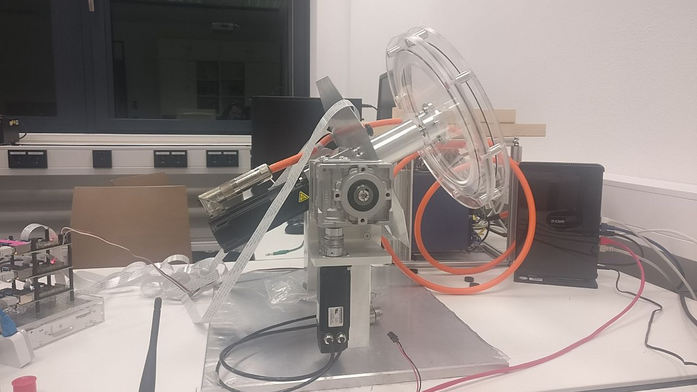

Introduction
This repository has the code for a distributed camera-sensor which messures the angle of the ball in the hoop

There are 3 cameras evenly distributed on the circle plate. The hoop can spin in 2 axes.
Scope
This repository has only the python code for the camera sensors. It sends its result to a dspace card, which is connected to one of the pi’s through a serial connection. The 3 pis can communicate through a ethernet connection

Using this software
- Installation guide
How to deploy the software.
- Running and calibrating
How to calibrate and run the software.
- Code
Documentation of the software.